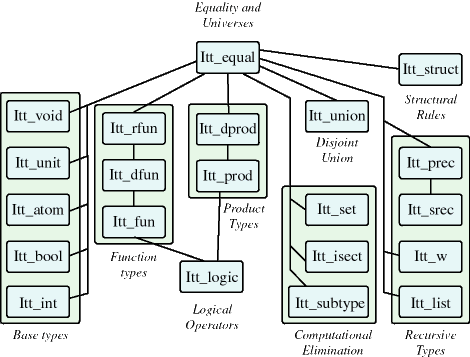

Intuitionistic Type Theory
The module ITT is the largest, and most complete,
logic in MetaPRL. The paper Formal Abstract Data Types
gives an explanation of the logic. The logic can be summarized
as follows:
- The type theory contains untyped programs, and types
that are used to state propositions and classify the programs.
- The type theory is predicative (there are no non-trivial
types that contain themselves), and it is higher-order.
- Types are expressive, there are:
- Type universes that contain types,
- Function types A -> B, dependent function type
whose range depends on the argument (x: 'A -> 'B['x]),
and very-dependent function types ({ f | x: 'A -> 'B['f;
'x] }), whose range depends on the argument, and the function
itself.
- Product types 'A * 'B, representing pairs of values,
and dependent product types (x: 'A * 'B['x]), representing
pairs whose snd type depends on the fst element.
- Recursive types mu{x. 'T['x]}
- Types that eliminate computation, including
- The "set" type { x: 'A | 'B['x] }
- Union types union x: 'A. 'B['x]
- Intersection types isect x: 'A. 'B['x]
- Quotient types x, y: 'A // 'P['x; 'y], that modify
type equality.
The following diagram illustrates the inheritance hierarchy
in the type theory.
